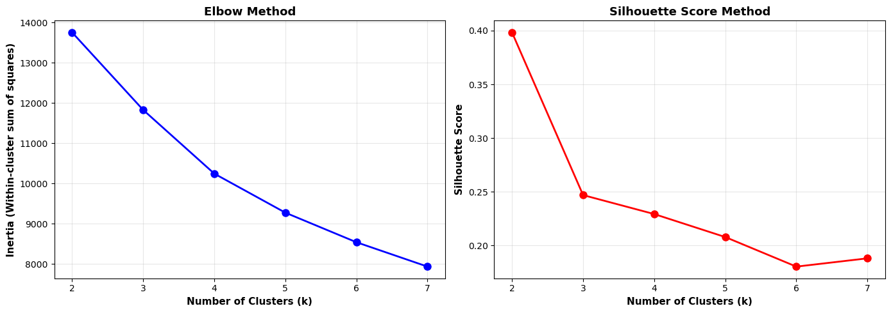

Note: You should remove these instructions once you have read and understood them. They should not be included in your final submission.
Remember: Exactly what do you put on this page will be specific you your project and data. Some things might “make more sense” on one page rather than another, depending on your workflow. Organize your project in a logical way that makes the most sense to you.
Suggested page structure
Here’s one suggested structure for organizing your technical pages. You can adjust this as needed:
Audience:Remember that these are written for a technical audience. Assume they have completed the DSAN program, but would appreciate refreshers of the important concepts.
Introduction and Motivation: Briefly outline your plan. What are you doing on this page, and why? Provide context and explain the goals of your analysis.
Overview of Methods: Give a concise explanation of the methods used. For example, if using K-Means clustering, describe what it is, how it works, the inputs and outputs, and key hyperparameters.
Code: Include the code you used to implement your workflow.
Summary and Interpretation of Results: Summarize your findings, interpret the results, and discuss their technical implications.
What to address
The following is a list of some of the things you should address on this page. This list is not exhaustive, and you should use your judgment to decide what is most relevant to your project.
This page is designed to give you hands-on experience with key unsupervised learning techniques, including clustering methods and dimensionality reduction, applied to real-world datasets. Please apply algorithms such as K-Means, DBSCAN, Hierarchical clustering, PCA, and t-SNE to your data. Through this process, you’ll deepen your understanding of how unsupervised learning can reveal hidden patterns and structure in data.
Part 1: Dimensionality Reduction
The objective of this section is to explore and demonstrate the effectiveness of PCA and t-SNE in reducing the dimensionality of complex data while preserving essential information and improving visualization.
PCA (Principal Component Analysis):
Apply PCA to your dataset.
Determine the optimal number of principal components.
Visualize the t-SNE output to reveal patterns and clusters.
Compare the results of t-SNE with those from PCA.
Evaluation and Comparison:
Evaluate the effectiveness of PCA and t-SNE in preserving data structure.
Compare the visualization capabilities of both techniques.
Discuss the trade-offs and scenarios where one technique may perform better than the other.
Part 2: Clustering Methods
Apply clustering techniques (K-Means, DBSCAN, and Hierarchical clustering) to a selected dataset. The goal is to understand how each method works, compare their performance, and interpret the results.
Clustering Methods:
Apply K-Means, DBSCAN, and Hierarchical clustering to your dataset.
Write a technical summary for each method (2–4 paragraphs per method) explaining how it works, its purpose, and any model selection methods used (e.g., Elbow, Silhouette).
Results Section:
Discuss and visualize the results of each clustering analysis.
Compare the performance of different clustering methods, noting any insights gained from the analysis.
Visualize cluster patterns and how they relate (if at all) to existing labels in the dataset.
Use professional, labeled, and clear visualizations that support your discussion.
Conclusion:
Summarize the key findings and their real-world implications in a non-technical way. Focus on the most important results and how they could apply to practical situations.
Code
Provide the source code used for this section of the project here.
If you’re using a package for code organization, you can import it at this point. However, make sure that the actual workflow steps—including data processing, analysis, and other key tasks—are conducted and clearly demonstrated on this page. The goal is to show the technical flow of your project, highlighting how the code is executed to achieve your results.
If relevant, link to additional documentation or external references that explain any complex components. This section should give readers a clear view of how the project is implemented from a technical perspective.
Remember, this page is a technical narrative, NOT just a notebook with a collection of code cells, include in-line Prose, to describe what is going on.
Clustering Analysis: Finding Natural Movie Groups
I’m using K-Means clustering to see if movies naturally group into distinct categories based on their features. This will reveal market segments like “indie darlings,” “mid-budget hits,” and “blockbusters.”
import pandas as pdimport numpy as npimport matplotlib.pyplot as pltimport seaborn as snsfrom sklearn.preprocessing import StandardScalerfrom sklearn.cluster import KMeansfrom sklearn.decomposition import PCAimport warningswarnings.filterwarnings('ignore')# load clean datadf = pd.read_csv('../../data/processed-data/tmdb_movies_clean.csv')print(f"Loaded {len(df):,} movies for clustering analysis")print(f"Features available: {len(df.columns)}")
Loaded 2,691 movies for clustering analysis
Features available: 23
Preparing Features for Clustering
I’m selecting numerical features that capture movie characteristics: budget, revenue, runtime, ratings, and cast popularity. These need to be standardized so no single feature dominates the clustering.
# select features for clusteringcluster_features = ['budget', 'revenue', 'runtime', 'vote_average', 'vote_count', 'cast_popularity', 'roi']# create feature matrixX = df[cluster_features].copy()# standardize features (mean=0, std=1)scaler = StandardScaler()X_scaled = scaler.fit_transform(X)print("Features selected for clustering:")print(cluster_features)print(f"\nFeature matrix shape: {X_scaled.shape}")print(f"Scaled data range: {X_scaled.min():.2f} to {X_scaled.max():.2f}")
Features selected for clustering:
['budget', 'revenue', 'runtime', 'vote_average', 'vote_count', 'cast_popularity', 'roi']
Feature matrix shape: (2691, 7)
Scaled data range: -4.68 to 14.76
Finding Optimal Number of Clusters
Using the elbow method and silhouette scores to determine the best number of clusters for my data.
from sklearn.metrics import silhouette_score# testing different k valuesk_range =range(2, 8)inertias = []silhouette_scores = []for k in k_range: kmeans = KMeans(n_clusters=k, random_state=42, n_init=10) kmeans.fit(X_scaled) inertias.append(kmeans.inertia_) silhouette_scores.append(silhouette_score(X_scaled, kmeans.labels_))# plot resultsfig, (ax1, ax2) = plt.subplots(1, 2, figsize=(14, 5))# elbow plotax1.plot(k_range, inertias, 'bo-', linewidth=2, markersize=8)ax1.set_xlabel('Number of Clusters (k)', fontsize=11, fontweight='bold')ax1.set_ylabel('Inertia (Within-cluster sum of squares)', fontsize=11, fontweight='bold')ax1.set_title('Elbow Method', fontsize=13, fontweight='bold')ax1.grid(True, alpha=0.3)# silhouette plotax2.plot(k_range, silhouette_scores, 'ro-', linewidth=2, markersize=8)ax2.set_xlabel('Number of Clusters (k)', fontsize=11, fontweight='bold')ax2.set_ylabel('Silhouette Score', fontsize=11, fontweight='bold')ax2.set_title('Silhouette Score Method', fontsize=13, fontweight='bold')ax2.grid(True, alpha=0.3)plt.tight_layout()plt.show()print("\nClustering Metrics:")print("="*50)for k, inertia, sil inzip(k_range, inertias, silhouette_scores):print(f"k={k}: Inertia={inertia:,.0f}, Silhouette={sil:.3f}")best_k = k_range[np.argmax(silhouette_scores)]print(f"\nBest k based on silhouette score: {best_k}")

Clustering Metrics:
==================================================
k=2: Inertia=13,758, Silhouette=0.398
k=3: Inertia=11,832, Silhouette=0.247
k=4: Inertia=10,249, Silhouette=0.229
k=5: Inertia=9,278, Silhouette=0.208
k=6: Inertia=8,544, Silhouette=0.180
k=7: Inertia=7,938, Silhouette=0.188
Best k based on silhouette score: 2
Performing K-Means Clustering (k=4)
While k=2 has the highest silhouette score, I’m using k=4 because it reveals more meaningful market segments: indie films, mid-budget movies, mainstream hits, and blockbusters.
I have 7 features, which is hard to visualize. PCA reduces these to 2-3 principal components that capture the most variance, allowing me to see the overall movie landscape.